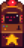

Briefe

Briefe sind Nachrichten, die an der Spieler gesendet werden. Sie können am Briefkasten auf dem Hof und der Inselfarm gelesen werden. Sie erscheinen zu Tagesbeginn an feststehenden Tagen, oder einen Tag nach Erfüllung bestimmter Voraussetzungen im Briefkasten des Spielers. Briefe enthalten Belohnungen, Erläuterungen zu Spielmechaniken, Hinweise, Erinnerungen und Hintergrundwissen.
Wird ein Brief, der eine Belohnung enthält, direkt geschlossen, wird versucht den Gegenstand in das Inventar zu legen. Ist kein Platz frei, öffnet sich ein Menü, ähnlich wie beim Fischschatzmenü und der Spieler hat die Möglichkeit Platz zu schaffen. Wird auch dieses Menü ohne Entnahme geschlossen, geht der Belohnungsgegenstand verloren.
Die meisten erhaltenen Briefe werden zum Reiter Sammlung hinzugefügt. Dieser Reiter zeichnet keine Nachrichten auf, die man nach Ohnmacht durch verlorene Gesundheit oder nach 02:00 Uhr erhält. Die gespeicherten Briefe beinhalten weder die Anhänge aus dem Originalbrief noch den Namen des geheimen Freundes beim Fest des Wintersterns.
Besonderes Briefpapier
Briefe von Sandy, dem Zauberer und Krobus werden auf besonderen thematischen Briefpapier geschrieben:
Normale Briefe
| Voraussetzung | Absender | Brief | Belohnung |
|---|---|---|---|
| 2. Frühling, J1 | Hallo, bin gerade von einem Angeltrip zurückgekommen. Du solltest mal am Strand vorbeikommen. Ich habe etwas für dich.. -Willy |
Auftrag: Auf zum Strand | |
| 5. Frühling, J1 | An unsere geschätzten Joja-Markt-Kunden: Unsere Teammitglieder haben den Landrutsch, der durch unsere Bohroperationen in der Nähe des Bergsees ausgelöst wurde, entfernt. Ich möchte euch daran erinnern, dass unsere Bohroperationen vollkommen legal sind (gemäß Abs. L61091, Joja GmbH Gesetzesänderung). Verantwortlicher Umgang mit der örtlichen Umwelt ist unsere höchste Priorität! Wir entschuldigen uns für jegliche Unannehmlichkeiten, die dieser Unfall eventuell bereitet hat. Wie immer bedanken wir uns für eure fortwährende Unterstützung! -Morris, Repräsentant für Joja-Kundenzufriedenheit |
Entfernung der Blockade in den Bergen | |
| 11. Frühling, J1 | VERSCHWUNDEN: Ich habe meine Lieblingsaxt verloren! Wenn du sie findest, bring sie SOFORT zurück. Ich habe eine ganz schön schwere Zeit ohne sie. Wer auch immer sie findet, bekommt 250 G Finderlohn. -Robin |
Auftrag: Robins verlorene Axt | |
| 12. Frühling | Hallo <Spieler>, morgen halten wir das Eierfest am Stadtplatz ab. Du solltest zwischen 9 und 14 Uhr vorbeikommen, wenn du teilnehmen willst. Du willst die jährliche Eiersuche sicher nicht verpassen! -Bürgermeister Lewis |
||
| 15. Frühling, J1 | Hallo mein Liebling, Ich weiß, dass du gerade erst mit dem Gärtnern angefangen hast, deswegen wollte ich dir einen kleinen Tipp geben. Die meisten Pflanzen wachsen nur in einer Jahreszeit. Wenn der Sommer kommt, werden all deine Frühlingspflanzen vergehen. Also plane gut! -Oma Evelyn |
||
| 15. Frühling, J1 | Lieber Nachbar, ich hoffe, du fühlst dich in deinem neuen Haus schon wohl. Ich schreibe dir diesen Brief, um dich wissen zu lassen, dass Pierres Laden jetzt Dünger verkauft! Warum schaust du nicht mal vorbei, vielleicht kannst du dir ein paar Dutzend Boxen leisten? -Pierre |
||
| 19. Frühling, J1 | <Spieler>- Ich habe eine Bitte. Ich brauche frischen Blumenkohl für ein Rezept, das ich ausprobieren will. Könntest du mir einen bringen? -Jodi |
Auftrag: Jodis Bitte | |
| 23. Frühling | Hallo <Spieler>, morgen treffen wir uns für den jährlichen Blumentanz. Wenn du einen Partner findest, kannst du vielleicht sogar selbst am Tanz teilnehmen! Im Westen der Stadt ist eine kleine Lichtung, wo wir den Tanz abhalten werden. Komm zwischen 9 und 14 Uhr, wenn du daran interessiert bist! -Bürgermeister Lewis |
||
| 3. Sommer, J1 | <Spieler>- Das ist so peinlich... Ich habe meine violetten Glücksshorts verloren. Ich sage dir das, weil ich dir vertrauen kann. Wenn du sie findest, bring sie mir UNAUFFÄLLIG zurück. Ich zahle gut. Danke. -Bürgermeister Lewis |
Auftrag: Bürgermeister "Shorts" | |
| 10. Sommer | Hallo <Spieler>, morgen versammeln wir uns alle für das jährliche Luau am Strand. Das Highlight der Veranstaltung ist die Gemeinschaftssuppe. Bringe auf jeden Fall etwas dafür mit! Der Gouverneur selbst nimmt an der Veranstaltung teil, also sei bitte höflich und zuvorkommend. Komm zwischen 9 und 14 Uhr zum Strand. -Bürgermeister Lewis |
||
| 14. Sommer, J1 | Hey Kleiner, meine Kehle ist so trocken wie'n Wüstenknochen. Mich dürstet es nach etwas hellem Bier. Hast du eins? Reguläres Bier wird nicht reichen. Ich brauche helles Bier. -Pam |
Auftrag: Pam ist durstig | |
| 20. Sommer, J1 | <Spieler>- Ich sammle Daten zu der Korrelation zwischen Erdboden-Alkalinität und Nutzpflanzen-Fruktosewerten. Kurz gesagt, ich brauche eine frische Melone von deinem Hof. Wenn du mir eine vorbeibringst, wäre ich sehr dankbar. -Demetrius |
Auftrag: Nutzpflanzen-Forschung | |
| 25. Sommer, J1 | An Bauer <Spieler>: mein Knie macht mir wieder Probleme und weißt du, was da hilft? Das verdammte Ding mit Peperoni einzureiben. Das Problem ist, mein Vorrat geht langsam zur Neige. Wenn du eine übrig hast, schulde ich dir was. -George |
Auftrag: Knietherapie | |
| 28. Sommer | Hallo <Spieler>, heute Nacht um 22 Uhr wird etwas Wunderschönes passieren. Die Mondlichtquallen werden an Pelikan vorbeischwimmen, um ihre lange Reise in den Winter zu beginnen. Wir versammeln uns alle am Strand, um ihnen zuzusehen. Das solltest du nicht verpassen! Man sieht sich heute Nacht. -Demetrius |
||
| 3. Herbst, J1 | Hallo <Spieler>, ich würde meinen Kühen gerne einen speziellen Leckerbissen gönnen. Sie sind so gute Mädchen und haben auch Hunger. Könntest du mir ein wenig Amarant bringen? Sie lieben das Zeug. Danke. -Marnie |
Auftrag: Kuh-Vergnügen | |
| 8. Herbst, J1 | Hallo, es ist gerade Brombeerenzeit. Die Büsche sind voll mit ihnen. Ich würde auch gerne ein paar pflücken, aber ich habe meinen Korb verloren. Kannst du helfen? -Linus |
Auftrag: Beerenkorb | |
| 9. Herbst | Hallo <Spieler>, in einer Woche halten wir das Stardew Valley Volksfest ab! Es ist die größte Veranstaltung des Jahres, die Leute vom ganzen Land her in unser bescheidenes Städtchen lockt. Du kannst deinen eigenen Hof dort präsentieren, wenn du willst. Bring einfach bis zu 9 Gegenstände mit, die am besten deine Talente widerspiegeln. Du wirst für die Qualität und Vielfältigkeit deiner Auslage bewertet. Das Fest beginnt um 9 Uhr... Verpass es nicht! -Bürgermeister Lewis |
||
| 15. Herbst | Hallo <Spieler>, ich wollte dich nur an das Stardew Valley Volksfest morgen erinnern. Vergiss nicht, deine 9 Gegenstände für deine Auslage mitzunehmen. Das Fest beginnt um 9 Uhr auf dem Stadtplatz. Wir sehen uns dort! -Bürgermeister Lewis |
||
| 19. Herbst, J1 | <Spieler>- Ich würde dir gerne einen Kürbis abkaufen. Meine Tochter und ich wollten für die kommende Geisternacht gerne eine Kürbislaterne schnitzen. -Caroline |
Auftrag: Kürbis-Schnitzen | |
| 26. Herbst | Hallo <Spieler>, schon ein Frösteln in der Luft gespürt? Könnte der Einzug des Winters sein... Oder das Kribbeln eines dunklen Geistes, der uns hilft, das Fest von morgen zu feiern... die Geisternacht. Komm um 22 Uhr vorbei, wenn du mitmachen willst. -Bürgermeister Lewis |
||
| 2. Winter, J1 | Hey, ich habe eine kleine Herausforderung für dich: Fang mir einen Tintenfisch. Du kannst sie nachts aus dem Ozean fischen. Allerdings tauchen sie nur im Winter auf. -Willy |
Auftrag: Fange einen Tintenfisch | |
| 2. Winter, J1 | Hey <Spieler>, Wollte dich nur über einen neuen Artikel informieren, den ich anbiete... er wird als 'Holzhackmaschine' bezeichnet. Du kannst damit Hartholz in mehrere Stücke normalen Holzes zerkleinern! Ich weiß, dass Holz im Winter schwer zu bekommen sein kann, also, wenn dein Vorrat knapp wird, überleg' dir einen anzuschaffen. -Robin |
||
| 6. Winter, J1 | Ich habe eine etwas ungewöhnliche Anfrage. Könntest du sie geheimhalten? Ich will, dass du Emily einen Amethysten vorbeibringst. Es ist ihr Lieblingsstein. Sag ihr, dass er von mir kommt. -Clint |
Auftrag: Clints Versuch | |
| 7. Winter | Hallo <Spieler>, morgen versammeln wir uns alle vor Marnies Haus für das Fest des Eises. Wir möchten so den Winter genießen... Es wird Schneemänner, Eisskulpturen und einen Wettbewerb im Eisfischen geben! Komm zwischen 9 und 14 Uhr vorbei, wenn du mitmachen willst. -Bürgermeister Lewis |
||
| 12. Winter, J1 | <Spieler>- Ich forsche gerade an der vergessenen Kunst der Schattenwahrsagung. Aber ich benötige einen Gegenstand namens "Schattenessenz". Bring ihn zu mir und ich werde dich belohnen. -M. Rasmodius |
Auftrag: Dunkle Reagenz | |
| 14. Winter | Ab Morgen dockt eine reisende Händlerflotte in Pelikan an. Sie kommen wegen des jährlichen Nachtmarkts. Der Markt beginnt um 17 Uhr und läuft die nächsten drei Tage. Wenn du dabei sein willst, geh nach 17 Uhr zum Strand. Es gibt Gratis-Kaffee! |
||
| 17. Winter, J1 | <Spieler>, entschuldige, dass ich schon wieder störe, aber ich brauche einen weiteren Gefallen. Ich habe einen neuen Hammer und würde ihn gerne an verschiedenen Metallen ausprobieren. Könntest du mir einen Eisenbarren schmelzen und vorbeibringen? Danke. -Clint |
Auftrag: Ein Gefallen für Clint | |
| 18. Winter | Hallo <Spieler>, ich würde dir gerne ein paar Informationen über die kommende Veranstaltung geben: das Fest des Wintersterns. Es ist Zeit für die Gemeinde, sich an all das Gute in diesem Jahr zu erinnern und zusammenzukommen. Eine beliebte Tradition ist das "Wichteln", bei dem jedem in der Stadt zufällig eine andere Person zugeteilt wird. Am Tag des Fests bringt jeder ein Geschenk für seinen geheimen Freund und überrascht ihn mit etwas Besonderem! Dieses Jahr ist dein geheimer Freund: <Name> Verrate es niemandem! Das Fest wird am 25. von 10 bis 14 Uhr auf dem Stadtplatz stattfinden. Man sieht sich dort! -Bürgermeister Lewis |
||
| 21. Winter, J1 | <Spieler>- Wie geht es dir? Ich hoffe, der Winter war nicht zu hart für dich. Ich schreibe dir diesen Brief, um dich um ein wenig Hartholz zu bitten. Ich brauche etwa zehn Stück, wenn du so viele hast. Wenn nicht, auch kein Problem. Pass auf dich auf! -Robin |
Auftrag: Robins Bitte | |
| 24. Winter | Hallo <Spieler>, morgen ist das Fest des Wintersterns. Hast du ein Geschenk für deinen "geheimen Freund" <Name>? Das Festmahl beginnt um 9 Uhr auf dem Stadtplatz. Man sieht sich dort! -Bürgermeister Lewis |
||
| 26. Winter, J1 | An <Spieler>- Ich will einen Fischeintopf machen, aber dafür brauche ich einen weißen Thun! Ich weiß, dass sie schon bald nicht mehr zu fangen sind... Tut mir leid, dass das so spontan kommt. Könntest du mir einen fangen? -Gus |
Auftrag: Fischeintopf | |
| 1. Frühling, J2 | Hallo <Spieler>, ich verkaufe jetzt hochwertigen Dünger und neue Nutzpflanzen! Bis bald! -Pierre |
||
| 1. Frühling, J2 | Hinweis: Der Preis für Rohmaterialien in Robins und Clints Läden ist gestiegen. |
||
| 6. Frühling, J2 | <Spieler>- Ich sehne mich gerade wirklich nach einer frischen Aprikose. Ich habe keine im Laden gefunden, also frage ich dich. Ich bezahle dich auch gut dafür! -Emily |
Auftrag: Frische Frucht | |
| 15. Frühling, J2 | Hallo <Spieler>, ich würde gerne meinen Ehemann mit einem Geschenk überraschen. Er ist ein großer Fan von Lauch. Könntest du mir einen bringen? -Oma Evelyn |
Auftrag: Omas Geschenk | |
| 21. Frühling, J2 | MITTEILUNG Pierre hier... Ich möchte gerade wirklich, wirklich einen Teller Sashimi. Ich werde gutes Geld an die Person bezahlen, die mir einen bringt. -Pierre |
Auftrag: Pierres Mitteilung | |
| 6. Sommer, J2 | Fischer gesucht Ich brauche ein gutes Exemplar eines Kugelfischs. Ich arbeite gerade an einem Experiment zu dem Toxin der Kugelfische. Belohnung: 1000 G -Demetrius |
Auftrag: Aquatische Forschung | |
| 15. Sommer, J2 | Hi <Spieler>, ich würde meiner Frau gerne eine Sternfrucht zu unserem Jahrestag schenken. Gibt's vielleicht welche auf deinem Hof? Wenn du mir eine vorbeibringst, wäre ich dir sehr dankbar. -Kent |
Auftrag: Der Stern eines Soldaten | |
| 21. Sommer, J2 | <Spieler>, ich brauche Trüffelöl. Frag nicht warum. -Bürgermeister Lewis |
Auftrag: Bürgermeister-Bedürfnisse | |
| 6. Herbst, J2 | Gesucht: 1 frischer Hummer für eine wundervolle Fischcremesuppe, an der ich arbeite. Wer: Gus, Besitzer der Kneipe Zum Sternenfall Belohnung: 800 G |
Auftrag: Gesucht: Hummer | |
| 19. Herbst, J2 | MITTEILUNG Hat irgendwer 'ne Batterie? Die Fernbedienung von meinem Fernseher hat den Geist aufgegeben und es ist wirklich nervig, beim Umschalten immer aufzustehen. -Pam |
Auftrag: Pam braucht Saft | |
| 5. Winter, J2 | <Spieler>, ich arbeite gerade an einem verzauberten Stab von unsagbarer Kraft. Allerdings fehlt mir etwas: ein Iridiumbarren. Ich bin bereit, den fünffachen Marktpreis dafür zu zahlen. Bring ihn vorbei, sobald du kannst. -M. Rasmodius, Zauberer |
Auftrag: Stab der Macht | |
| 13. Winter, J2 | Ich habe eine weitere Herausforderung für dich: Fang mir einen Lengdorsch. Die geben nicht so schnell auf, aber ich weiß, dass du es schaffen kannst. -Willy |
Auftrag: Fange einen Lengdorsch | |
| 19. Winter, J2 | An <Spieler>, ich bin mit meiner Weisheit am Ende. Ich will wirklich einen Kokos-no-no für die Kneipe machen, aber ich weiß nicht, wie ich an eine Kokosnuss kommen soll! Kannst du mir helfen? -Gus |
Auftrag: Exotische Spirituosen | |
| Spielnachricht "Inventar voll" gesehen | WERBUNG: "Ich finde dauernd cooles Zeug, aber mein Rucksack ist voll!" Klingt das nach dir? Pierres hat genau das, was du brauchst! Statte Pierres Gemischtwarenladen noch HEUTE einen Besuch ab und sieh dir unseren günstigen Rucksack24 an! Bis dann! |
||
| Mehr als 100 Stein gesammelt | Robin hier! Ich weiß, du hast eine Menge Steine auf deinem Hof herumliegen. Wenn du welche übrig hast, könntest du dir überlegen, ob ich dir nicht vielleicht einen Brunnen bauen soll. Brunnen kannst du überall auf dem Hof platzieren und sie sind sehr praktisch, um deine Gießkanne schnell wieder aufzufüllen. Schau einfach bei meinem Laden mit 75 Steinen und 1000 G vorbei, wenn du bereit bist. -Robin |
||
| Ebene 5 in den Minen erreicht | Ich habe gesehen, dass du die alte Mine erkundet hast. Du hast die Seele eines Abenteurers, so viel kann ich schon einmal sagen. Wenn du 10 Schleime erledigen kannst, hast du dir einen Platz in meiner Abenteurergilde verdient. Pass auf dich auf. -Marlon |
Auftrag: Aufnahme | |
| Goldene Schriftrolle im Gemeinschaftszentrum untersucht | Meine Quellen verraten mir, dass du dich ein wenig im alten Gemeinschaftszentrum umgeschaut hast. Warum stattest du mir nicht einen Besuch ab? Meine Gemächer befinden sich westlich des Waldsees, im Steinturm. Ich habe eventuell ein paar Informationen bezüglich des... "Rattenproblems". -M. Rasmodius, Zauberer |
Auftrag: Triff den Zauberer | |
| Kochrezept erlernt | Hi <Spieler>, ich muss mich dafür entschuldigen, dass ich mich über die alte Hütte deines Großvaters lustig gemacht habe, als wir uns das erste Mal getroffen haben. Es ist wirklich ein nettes, kleines Haus! Dennoch wirst du vielleicht eines Tages mehr Platz brauchen. Dabei kann ich dir behilflich sein. Wenn du mir die Materialien bringst und eine kleine Gebühr zahlst, kann ich dein Haus vergrößern. Die erste Erweiterung, die ich anbiete, ist eine Küche. Mit einer Küche kannst du all die Rezepte kochen, die du gelernt hast! Ich hoffe, dass du dich im Sternentautal wie zu Hause fühlst! Deine Schreinerin vor Ort, Robin |
||
| Ich habe ein paar neue Gegenstände auf Lager... Eine Luxus-Angel und Köder, die du daran anbringen kannst! Du kannst Köder nutzen, damit Fische schneller anbeißen. Hoffentlich sehe ich dich bald! -Willy |
|||
| Komm beim Laden vorbei und schau dir die neuen Angeln an, die ich verkaufe. Sie sind die besten, die man mit Geld kaufen kann... und du kannst sie mit verschiedenen Ausrüstungsteilen ausstatten! Hoffentlich bis bald! -Willy |
|||
| Erfolg Meisterangler | An <Spieler>, deine Angelfähigkeiten übertreffen sogar die von meinem alten Papa... Ich bin beeindruckt. Diese Sternenfall-Frucht wurde seit Generationen von Willy Senior zu Willy Junior weiterge... Ach, was auch immer. Vermutlich für'n paar tausend Jahre. Aber da ich keine Kinder hab... will ich, dass du sie bekommst. -Willy |
||
| Mama | An <Spieler>, wie geht es dir, mein Schatz? Ich vermisse dich so sehr, seit du weggezogen bist. Ich hoffe, dein Landleben ist genau so, wie du es dir erhofft hast. Alles Liebe, Mama. P.S. Ich habe dir deine Lieblingskekse geschickt <3 |
||
| Papa | Hallo <Spieler>, hast du dich schon an dein neues Leben gewöhnt? Ich kann nicht glauben, dass du erwachsen bist... Die Zeit vergeht wirklich schnell. Jetzt nachdem du weg bist, habe ich viel extra Geld herumliegen, also habe ich ein kleines Geschenk beigelegt. Alles Liebe, Papa. |
||
| Mama | Hallo <Spieler>, es ist so lange her, seit ich von dir gehört habe, mein Schatz. Hier ist es genau so wie immer. Ich vermisse dich sehr. Alles Liebe, Mama P.S. Ich habe einen Umschlag mit etwas Geld gefunden, das dir dein Opa hinterlassen hat. |
||
| Papa | Hallo <Spieler>, wie läuft das ländliche Leben so? Es ist einsam hier ohne dich, aber ich bin stolz auf das, was du machst. Alles Liebe, Papa P.S. Ich habe einen Umschlag mit etwas Geld gefunden, das dir dein Opa hinterlassen hat. |
||
| Sternentautaler Umschau | Grüße, <Spieler>. Es freut uns, dir mitteilen zu können, dass dein Hof nächste Woche in der "Aufgepasst!"-Kolumne der Sternentautaler Umschau vorgestellt wird! Herzlichen Glückwunsch. Wir sind von deinem schnellen Fortschritt sehr beeindruckt. -Sternentautaler Umschau |
||
| Mama | Hallo <Spieler>, ich habe einen Artikel über dich in der Zeitung gesehen! Sieht so aus, als wäre das ländliche Leben ganz gut für dich! Ich bin so stolz auf dich. Pass auf dich auf, mein Schatz. Alles Liebe, Mama. |
||
| Papa | Hallo <Spieler>, ich habe einen Artikel über dich in der Zeitung gelesen! Ich bin sehr vom Fortschritt auf deinem Hof beeindruckt! Mach so weiter und dein alter Vater wird doch noch in einem luxuriösen Bungalow in der Südsee seine alten Tage verbringen ;). Alles Liebe, Papa |
||
| Mama | Hallo <Spieler>, wie laufen die Dinge so? Du musst wohl ein Vermögen mit deinem Hof verdienen. Vergiss deine liebe alte Mutter nicht, wenn du Millionär wirst! Alles Liebe, Mama P.S. Genieß den Kuchen! |
||
| Papa | Hallo <Spieler>, ich weiß, du bist mit der Farm beschäftigt und kannst mich deswegen nicht besuchen. Ich verstehe das. Du arbeitest so hart... Mach so weiter und du kannst alles schaffen! Alles Liebe, Papa P.S. Ich habe ein paar Qualitätssteine beigelegt. |
||
| Erfolg freigeschaltet | Hi. Ich verkaufen Hüte. Okay, stups? Komm zu altem altem altem Haus, stups. Bring Münze. -Hutmaus |
||
| <Spieler>, ich habe etwas Neues ... Man nennt es den "Auto-Greifer". Das Ding kann deine Kühle und Ziegen melken, deine Schafe scheren ... und das ganz alleine! Aber es ist ein Luxus-Gegenstand, deswegen nehme ich 25.000 G dafür. -Marnie |
|||
| Hühnerstall erweitert | Hallo <Spieler>, danke für den Auftrag zur Stallerweiterung! Zusätzlich zum doppelten Platz im Stall habe ich mir erlaubt, dir noch einen Brutkasten einzubauen. Lege einfach ein Ei hinein, um ihn zu benutzen. Wenn du Platz in deinem Stall frei hast, wird das Ei in einigen Tagen schlüpfen! Wie immer danke für das Geschäft. -Robin |
||
| Schädelhöhle betreten | Wie ich sehe, hast du die Schädelhöhle betreten. Gut gemacht. Ich habe eine weitere Herausforderung für dich, Kind. Schaffe es mindestens 25 Ebenen tief. Ich habe einen Berg $ für dich, falls du es schaffst. Dein Freund, Mr. Qi |
Auftrag: Qis Herausforderung | |
| Ebene 25 der Schädelhöhle erreicht | Du hast es geschafft. Ich bin sehr beeindruckt. Genieße deine Belohnung. -Mr. Qi. |
||
| Schwarzes Brett vollendet | An <Spieler>, in letzter Zeit spricht jeder in der Stadt über deine enorme Großzügigkeit! Anscheinend sind Pakete mit Gegenständen bei vielen Leuten aufgetaucht, die sie vor Jahren im Gemeinschaftszentrum ausgeschrieben hatten. Und die Pakete haben alle deinen Hof als Absender! Danke, dass du dir die Mühe gemacht hast, so etwas zu tun... Alle in der Stadt sind hocherfreut! -Bürgermeister Lewis |
Nicht-heiratbare Dorfbewohner +2 | |
| Gemeinschaftszentrum komplettiert | WERBUNG: Pierres Gemischtwarenladen hat jetzt 7 Tage die Woche geöffnet! |
Pierres Gemischtwarenladen öffnet mittwochs | |
| Gemeinschaftszentrum oder Joja Gemeindeentwicklungsformular komplettiert | <Spieler>, Ich habe das Hinterzimmer des Ladens aufgeschlossen. Komm vorbei, wenn du Zeit hast. Ich möchte dir etwas zeigen. -Willy |
Zugang zu Willy's Boot | |
| Willy's Boot repariert | Gute Nachrichten! Das alte Boot ist wieder seetüchtig, dank dir! Komm im Hinterzimmer vorbei, wann immer du eine Mitfahrgelegenheit brauchst. Mein Geschäft ist jetzt jeden Tag um 8 Uhr morgens geöffnet, sodass du früh loslegen kannst. -Willy |
Zugang zur Ingwerinsel Tür vom Anglerbedarf öffnet um 8:00 Uhr | |
| 10 Hilfsaufträge vollendet | <Spieler>, ich habe gehört, du hast ein paar Leuten in der Stadt geholfen! Jeder scheint ziemlich dankbar zu sein. Ich verleihe dir hiermit den "Bester Nachbar, Beste Nachbarin"-Preis dieses Monats (mit einer kleinen Geldbelohnung). Mach weiter so! -Der Bürgermeister |
||
| 35 Hilfsaufträge vollendet | An <Spieler>, du bist so eine große Hilfe, seit du hier hergezogen bist... Jeder erzählt mir ständig von den wundervollen Dingen, die du für sie erledigt hast! Bitte akzeptiere diesen Dankbarkeitspreis. -Der Bürgermeister |
||
| Reise des Prärie-Königs gewonnen | Prärie-König Entwicklerteam | Herzlichen Glückwunsch!! Du hast "Reise des Prärie-Königs" durchgespielt und wurdest zufällig als der exklusive Gewinner unseres Gewinnspiels ausgewählt! Du hast deinen eigenen Prärie-König-Spielautomaten gewonnen! Jetzt kannst du "Reise des Prärie-Königs" auch zu Hause genießen. Du hast es dir verdient! -Dein Entwicklerteam |
 Prärie-König-Spielautomat |
| Junimo Kart gewonnen | Junimo-Kart Entwicklerteam | Herzlichen Glückwunsch!! Du hast alle Level von "Junimo Kart" abgeschlossen... Du bist sogar die erste Person in der gesamten Ferngill-Republik, die das geschafft hat! Dein Preis: eine Heimversion von "Junimo Kart"! Viel Spaß! -Dein Entwicklerteam |
|
| Alle 8 Sammler-Vogelscheuchen gesammelt | Rarecrow Gesellschaft | Lieber <Spieler>, Dein Engagement ist wirklich beeindruckend... Nur wenige schaffen es, die komplette Rarecrow-Kollektion zu erwerben! Bitte akzeptiere dieses Herstellungsrezept, um deiner Leistung zu gedenken. -Die Z.C. Rarecrow Gesellschaft |
Blaupause: |
| Objektwiederherstellungsdienst vom Telefon genutzt. | <Spieler>, Habe deinen verlorenen Gegenstand gefunden. Sei beim nächsten mal vorsichtiger! - Marlon |
<geretteter Gegenstand> | |
| Werkzeug verloren | Hallo <Spieler>, jemand hat deine Werkzeuge letzte Nacht in die Fundgrube geworfen. Ich bin kurz rein und habe sie dir neben das Bett gelegt. Ich hoffe, ich habe dich nicht geweckt... -Bürgermeister Lewis |
||
| Goldener Lewis in Stadt platziert | <Spieler>, Zukünftig würde ich es sehr zu schätzen wissen, wenn du meine PRIVATEN Gegenstände nicht so platzierst, dass der ganze Ort sie sieht! Ich bin sehr ungehalten! Nimm das Geld und sprich mit niemandem mehr über mein 'Projekt'. |
||
| Außerhalb in Ohnmacht gefallen | <Spieler>, jemand hat dich letzte Nacht in der Klinik vorbeigebracht. Du bist vor Erschöpfung ohnmächtig geworden! Du musst besser auf dich aufpassen und zu vernünftigen Zeiten schlafen gehen. Ich habe dir -Dr. Harvey |
||
| Außerhalb in Ohnmacht gefallen | <Spieler>, jemand hat dich letzte Nacht in der Klinik vorbeigebracht. Du bist vor Erschöpfung ohnmächtig geworden! Du musst besser auf dich aufpassen und zu vernünftigen Zeiten schlafen gehen. Da du kein Geld hast, habe ich die ärztliche Untersuchung kostenlos durchgeführt. -Dr. Harvey |
||
| Außerhalb in Ohnmacht gefallen | <Spieler>, du hast Glück, dass ich dich letzte Nacht gefunden habe! Du warst ohnmächtig und jemand hat deine Taschen durchsucht. Ich habe keine Ahnung, wie viel Geld er mitgenommen hat... Aber er ist sofort weggerannt, als ich näherkam. Pass besser auf! -Linus |
||
| Außerhalb in Ohnmacht gefallen | <Spieler>, Fand dich Gesicht nach unten im Schlamm, während meines 3:00 Uhr morgens Spaziergang. Du solltest versuchen, es das nächste Mal etwas früher nach Hause zu schaffen! -Marlon |
||
| Außerhalb in Ohnmacht gefallen | Liebe/r Hr./Fr. <Spieler>, letzte Nacht hat Sie ein Joja-Mitarbeiter bewusstlos aufgefunden. Ein Sanitäterteam wurde losgeschickt, um Sie sicher nach Hause zu bringen. Wir sind froh, dass es Ihnen gut geht! (Ihnen wurden -Morris, Repräsentant für Joja-Kundenzufriedenheit |
||
| Außerhalb in Ohnmacht gefallen | Lieber Hr./Fr. <Spieler>, letzte Nacht hat Sie ein Joja-Mitarbeiter bewusstlos aufgefunden. Ein Sanitäterteam wurde losgeschickt, um Sie sicher nach Hause zu bringen. Wir sind froh, dass es Ihnen gut geht! Da Sie kein Geld haben, sind wir gesetzlich dazu verpflichtet, diesen Service kostenlos anzubieten. -Morris Repräsentant für Joja-Kundenzufriedenheit |
||
| Auf der Ingwerinsel in Ohnmacht gefallen | Hi <Spieler>, Gestern Abend fand ich dich im Dunkeln schlummernd. Es war kein sehr sicherer Ort, also haben die Vogelfreunde dich in dein Bett gehoben. Bitte sei von nun an vorsichtig. -Leo P.S. Willy hat mir beim Schreiben geholfen. |
||
| Auf der Ingwerinsel in Ohnmacht gefallen | <Spieler>, Du bist nie am Boot aufgetaucht, also habe ich nach dir gesucht. Ich fand dich im Dreck ausgestreckt, mit ein paar Papageien, die dir Gold aus den Taschen zogen. Ich musste dich bis zum Boot schleifen. Meine Beine fühlen sich an wie zwei Süßwassergarnelen... -Willy |
||
| "Insel-Zutaten" Spezialauftrag | Hi <Spieler>, Lewis sagte mir, dass Du eine Menge Zutaten von der Insel verschifft hast! Es ist großartig, Zugang zu neuen Produkten zu haben... es eröffnet wirklich eine ganz neue Welt kulinarischer Möglichkeiten! Ich lege ein Geschenk für Sie bei... einige Entwürfe, die vielleicht nützlich sein könnten. -Caroline |
Blaupause: | |
| "Höhlenpatrouille" Spezialauftrag | Ehm, Hallo... Danke, dass Du mir geholfen hast, diese Monster zu beseitigen. Ich habe überhaupt keine Angst! ...Aber es sollte die Minen für alle anderen sicherer machen... nicht wahr? Nimm diese Blaupause. (Hoffentlich macht mich das nicht obsolet...) -Clint, der Schmied |
Blaupause: | |
| "Höhlenpatrouille" Spezialauftrag wiederholt | Ehm, Hallo... Danke, dass Du mir geholfen hast, noch mehr Monster auszuräumen. Vielleicht werde ich mich das nächste Mal selbst um sie kümmern... wenn ich Zeit habe! Nimm diesen Gegenstand. Ich habe ihn im Hinterzimmer gefunden... -Clint, der Schmied |
||
| "Aquatische Überbevölkerung" / "Biom Gleichgewich" Spezialauftrag | Hi <Spieler>, Danke für die Hilfe mit dem Fisch. Die Natur ist normalerweise gut darin, die Dinge im Gleichgewicht zu halten, aber manchmal können künstliche Faktoren ein Ungleichgewicht verursachen. Ich habe einen Entwurf aus einem Wissenschaftsmagazin beigefügt, der für dich interessant sein könnte. -Demetrius |
Blaupause: | |
| "Stein-Verjüngung" Spezialauftrag | Hi <Spieler>, Nochmals vielen Dank für die wunderbaren Edelsteine, die sich perfekt für meine Arbeit zur Energie Neuausrichtung eignen. Ich wollte dir mit diesem besonderen Geschenk danken. Ich hoffe, Du kreierst damit einige wunderbare Gegenstände! -Emily |
||
| "Geschenke für George" Spezialauftrag | Hey <Spieler>, Vielen Dank für den Lauch. Er sieht frisch und köstlich aus. George wird sie lieben. Heute werde ich ihn mit 12 kleinen, als Geschenk verpackten Schätzen überraschen (Dank dir!). Komm vorbei, wenn Du dabei sein möchtest! -Evelyn P.S. Bitte nimm dieses Geschenk an. Ich denke, es wird dir gefallen! |
||
| "Fragmente der Vergangenheit" Spezialauftrag | Hi <Spieler>, Danke für all die Knochen. Ich habe hier eine Menge zu sortieren! Wenn man bedenkt, dass jedes Fragment zu einem lebenden, atmenden Körper aus der Vergangenheit gehörte. Faszinierend. Bitte nehmen Sie dieses einzigartige Herstellungsrezept als Dankeschön-Geschenk an! -Gunther |
Blaupause: | |
| "Gus' berühmtes Omelett" Spezialauftrag | Hi <Spieler>, Danke für die Eier. Das Eigelb sieht toll aus... Ich glaube, das wird mein bisher bestes Omelett! Bitte nimm dieses Geschenk an. -Gus |
||
| "Ernte Bestellung" Spezialauftrag | <Spieler>, Ich wollte dir danken, dass du dich um meinen Sonderauftrag gekümmert hast. All die harte Arbeit, die Du geleistet hast, hat dem Image von Pelikan Stadt einen großen Aufschwung verliehen. Hier ist ein 'Mini-Versandbehälter' als Zeichen meiner Wertschätzung. Platziere es überall und ich werde auf meinen Runden sicher einen Halt machen. -Lewis |
||
| "Community Cleanup" Spezialauftrag | Hi <Spieler>, Danke, dass Du mir geholfen hast, das Tal zu säubern. Die Gewässer sehen viel sauberer aus. Ich denke, jeder wird es zu schätzen wissen. Ich auf jeden Fall. Als Dankeschön wollte ich dir beibringen, wie du deine eigenen Fasern anbauen kannst. Ich hoffe, es ist nützlich. -Linus |
Blaupause: | |
| "Das starke Zeug" Spezialauftrag | Hey, danke für den 'Saft'. Er hatte definitiv einen einzigartigen Geschmack. Übrigens, hast du jemals Kanal 736 eingeschaltet? Das ist ein saisonales Angelprogramm, das Dich interessieren könnte. Pass auf Dich auf, -Pam |
I.F.F. Fernsehsender | |
| "Pierres Prima Produkte" Spezialauftrag | Hallo <Spieler>, Ich schätze, die Leute waren nicht so begeistert von 'Pierres Prima Produkten', wie ich gehofft hatte... Wie auch immer, hier ist mein alter 'Mini-Versandbehälter'. Das nächste Mal, wenn Du einige Produkte in die Hände bekommst, die der Luxusmarke 'Pierres Prima' würdig sind, könntest Du sie mir vielleicht in meine Richtung schicken lassen? -Pierre |
||
| "Robin's Resourcen Rausch" Spezialauftrag | Hey <Spieler>, Herzlichen Glückwunsch zum Abschluss meiner kleinen Herausforderung. Ich bin beeindruckt! Als zusätzlichen Bonus habe ich die Entwürfe für eine neue Art von Truhe beigefügt. Viel Spaß! -Robin P.S. -- Jetzt, wo Du all diese Ressourcen herumliegen hast, warum kommst Du nicht für ein paar Bauarbeiten vorbei? |
Blaupause: | |
| "Saftige Käfer gesucht!" Spezialauftrag | -Willy |
Blaupause: | |
| "Tropische Fische" Spezialauftrag | <Spieler>, Herzlichen Glückwunsch zu einer erfolgreichen Insel-Fangreise. Ich bin stolz auf dich! Hier, nimm dieses besondere Fischbecken. Es wird ein tolles Stück in deinem Haus sein. -Willy |
||
| "Eine kuriose Substanz" Spezialauftrag | Dank des Ektoplasmas, das Du mir geliefert hast, ist mir ein großer Durchbruch auf dem Gebiet der geheimnisvollen arkanen Technik gelungen. Beiliegend findest Du Baupläne für eine äußerst nützliche Maschine... -M. Rasmodius, Wizard |
Blaupause: | |
| "Prismatisches Gelee" Spezialauftrag | Das Exemplar, das Du geliefert hast, bot einen großartigen Einblick in die Machenschaften der gefallenen Wesen, die wir 'Monster' nennen. Ich habe eine scharfe Tinktur formuliert, die diese Wesen berauschend finden. Verwende sie mit Vorsicht... -M. Rasmodius, Wizard |
Blaupause: |
Freundschafts-Briefe
Dies sind Briefe, die durch das Erreichen einer bestimmten Freundschaft oder nach Herz-Events ausgelöst werden:
Einmalige Briefe
| Voraussetzung | Absender | Brief | Belohnung |
|---|---|---|---|
| 8+ |
Hi <Spieler>. Du solltest mal irgendwann nach Sonnenuntergang in mein Zimmer kommen... Vielleicht so gegen 20:00 Uhr. Ich will dir etwas zeigen. -Abby |
||
| 10+ |
<Spieler>, triff mich heute Abend nach Sonnenuntergang in der Kneipe. -Alex |
||
| 2 |
Lieber <Spieler>, Danke, dass du gestern bei meinem Wintergarten vorbeigeschaut hast. Normalerweise trinke Tee allein, es hat jedoch Spaß gemacht mit dir diese Erfahrung zu teilen! Ich habe eine Anleitung beigefühgt, wie du deinen eigenen Tee zubereiten und anbauen kannst. Kein Druck, aber falls du am Ende etwas züchtest, bring mir eine Tasse mit! -Caroline |
Blaupause: | |
| 3+ 7+ |
An <Spieler>, es gibt nichts Besseres, als mit frischem Gemüse aus dem eigenen Garten zu kochen! Ich habe ein Rezept beigelegt, um dir dabei zu helfen. Pass auf dich auf, -Caroline |
Rezept: Rezept: | |
| 3+ 7+ |
Hmm, ich kenne ein paar Rezepte. Ich dachte, ich schicke dir mal eins... Vielleicht hilft es dir, mehr Erz abzubauen oder so. Pass auf dich auf. -Clint |
Rezept: Rezept: | |
| 3+ 7+ |
Ich wollte mich dafür bedanken, dass du Interesse an meiner Arbeit zeigst. Hier ist ein Rezept, das mir gefällt. -Demetrius |
Rezept: Rezept: | |
| 8+ |
<Spieler>, ich habe wundervolle Nachrichten... Mein Roman ist fertig!! Ich werde heute Nachmittag eine kleine öffentliche Lesung in der Bibliothek abhalten. Ich hoffe, ich werde dich dort sehen! -Elliott |
||
| 10+ |
Triff mich an einem sonnigen Morgen beim Steg. Ich habe da etwas vor. -Elliott |
||
| 14 |
<Spieler>, meine Liebe, Ich bin gerade in Grampleton angekommen, um die Tour zu starten. Ich habe vergessen, wie hektisch die Stadt ist! Die Straßen sind voller Menschen... sie scheinen entweder in Eile zu sein, oder sie verlieren sich in einer Benommenheit, ohne sich ihrer Umgebung bewusst zu sein. Ich vermisse Pelikan Stadt schon jetzt! Ich beginne die Tour heute Abend, in einer lokalen Buchhandlung. Ich muss zugeben, ich werde ein wenig nervös bei dem Gedanken, in der Öffentlichkeit zu sprechen... mein Magen fühlt sich an, als ob er in eine weiche Brezel gedreht und mit würzigem Käsedip übergossen wurde. Wünsch mir Glück! -In Liebe, Elliott P.S. Ich hoffe, du hattest eine ruhige Nacht und hattest nicht zu viel Angst allein in diesem großen Haus! |
||
| 14 |
Mein Schätzchen <Spieler>, Die erste Lesung verlief gut, obwohl das Publikum etwas kleiner war, als ich erhofft hatte. Trotzdem habe ich genug Exemplare des Buches verkauft, um mein (Käfer-befallenes) Hotelzimmer zu bezahlen! In ein paar Stunden reise ich nach Zuzu City. Wenn die gestrige Lesung zur Aufwärmung war, wird diese nächste eine wahre Napalm-Explosion sein... Ich vermisse dich sehr. Denke daran, dich gut zu ernähren! Oh, und vergiss nicht die übrig gebliebenen Krabbenkuchen, die ich in den Kühlschrank gestellt habe.... -In Liebe, Elliott |
||
| 14 |
Mein Schatz <Spieler>, Letzte Nacht in Zuzu City war ein Erlebnis! Es scheint, dass es hier eine große Literaturszene gibt.... ein paar Dutzend Leute tauchten bei meiner Lesung auf! Ich habe sogar ein paar Autogramme gegeben.... es ist seltsam, als jemand Wichtiges angesehen zu werden. Es ist alles eine Frage des Framings, eine große Illusion.... denn in Wirklichkeit bin ich niemand Besonderes. Nur dein treuer Elliott, wie immer. Aktuell bin ich allein, in meinem Hotelzimmer, nehme ein Joja Sparmenü zu mir... Sollte man das Essen nennen? Or `Essbare Materie'? Da brauch ich nicht lange drüber nachzudenken Es muss letzteres sein Ich freue mich darauf, bald nach Hause zurückzukehren. Ich hoffe, du hast die Krabbenkuchen genossen. -In Liebe, Elliott. |
||
| 14 |
In Träumen, wenn ich einen hohen Ausblick habe, blicke ich auf das sonnenbeschienene Meer Welch' entfernte Ufer ich bereist habe aber die Zeit trübt jetzt mein Gedächtnis Es gibt nur einen ewigen Ort Wo ich eines Tages über das Tal hinausgehen werde, wo meine Liebe wartet: Unser kleines Zuhause neben dem Teich -Elliott |
||
| 14 |
Mein Schatz, <Spieler>, ich werde dich nicht mit weiteren Details über meine Lesungen langweilen. Diese laufen meistens gleich ab. Ich bin sicher, dass deine Zeit viel aufregender war! Ich kann es kaum erwarten, zurückzukehren und zu sehen, welche Fortschritte gemacht wurden. Auf diesen langen Reisen zwischen den Städten amüsiere ich mich, indem ich die Augen schließe und mir den Hof vorstelle...Ich sehe Fässer, die mit süßem Wein pulsieren, einen Ofen, der mit wertvollem Erz in Flammen steht, und unsere kleine Küche mit dem Duft von Zimt und Muskatnuss. Es gibt viel zu genießen! Bleib nicht zu lange in den Mienen, mein Schatz. Es ist gefährlich da drin! Wenn du gehen musst... bring viel Essen mit. -Liebe, Elliott. |
||
| 14 |
Mein Schatz <Spieler>, Dies wird mein letzter Brief sein, bevor ich nach Hause zurückkehre. Ich hatte eine nette Reise... auch wenn nichts zu Aufregendes passiert ist. Es war schön Leute kennenzulernen, die meine Werke genießen, aber ich freue mich darauf endlich wieder nach Hause zu kommen. Ich freue mich auf die Behaglichkeit unseres kleinen Hauses, die berfiedigende Landarbeit, ein hausgemachtes Essen und vorallem darauf, mit dir in den Flanelllaken zu kuscheln. Auf Bald! - In Liebe, Elliot. |
||
| 3+ 7+ |
<Spieler>! Drehe den Brief für Anweisungen zu einer supergesunden Mahlzeit um! Du wirst dich richtig energiegeladen fühlen. Man sieht sich. -Emily |
Rezept: Rezept: | |
| 8+ |
<Spieler>, ich habe diese verrückte neue Idee und will dich da mit einbinden... Ich nenne es "Kleidertherapie". Komm bitte beim Haus des Bürgermeisters vorbei, um zu sehen worum es geht. In Liebe, Emily |
||
| 10+ |
"<Spieler>, gehen wir campen! Triff mich in den geheimen Wäldern nach 22:00 Uhr. In Liebe, Emily |
||
| 10 |
Vielen Dank für letzte Nacht... Ich hatte eine tolle Zeit. Ich bin eigentlich ziemlich froh, dass der Bär aufgetaucht ist! Man sieht sich. In Liebe, Emily |
||
| 4 7+ |
Hallo <Spieler>, normalerweise gebe ich meine Rezepte nicht heraus... Aber weil du so ein Schatz zu George und mir warst, habe ich dir dieses hier aufgeschrieben. -Evelyn |
Rezept: Rezept: | |
| 3+ 7+ |
Dachte, ich gebe dir dieses Rezept, das ich rumliegen hatte. Versuch, es nicht zu verbrennen. -George |
Rezept: Rezept: | |
| 3+ 7+ |
Hallo <Spieler>, hier ein Rezept aus meiner Kneipe. Ich teile das nur mit guten Freunden! -Gus |
Rezept: Rezept: | |
| 8 |
<Spieler>, ich hatte irgendwie Lust, dir einen kleinen Brief zu schreiben. Ich hatte so viel Spaß mit den Kühen gestern... Ich verstehe langsam, warum du das Bauernleben gewählt hast! Ich hoffe, ich sehe dich bald. -Haley |
||
| 10+ |
<Spieler>, ich habe eine Überraschung für dich. Triff mich bei den Gleisen. -Harvey |
||
| 3+ 7+ |
<Spieler>, dieses Rezept von mir hat den ersten Platz in einem Kochwettbewerb gewonnen! Ich hoffe, es gefällt dir. Danke, dass du ein Freund von mir bist. -Jodi |
Rezept: Rezept: | |
| 3+ 7+ |
Ich habe dieses Rezept im Ausland gelernt. Viel Spaß damit. Wollte mich nur bedanken, weil du dafür sorgst, dass ich mich hier wohlfühle. -Kent |
Rezept: Rezept: | |
| 3+ |
<Spieler>, Ich bin mir nicht sicher, wie das menschliche Nachrichtensystem funktioniert, also bat ich den Zauberer, mir beim Schreiben dieses Briefes zu helfen. Ich hoffe, es geht dir gut. Ich wollte das hier mit dir teilen... es sind Notizen, wie meinesgleichen einen bestimmten Gegenstand bauen. -Krobus |
Blaupause: | |
| 8 |
An <Spieler>, vielen Dank, dass du zu meiner Ausstellung gekommen bist. Sie lief hervorragend! Ich habe fast alle meine Skulpturen verkauft und jeder war so positiv und ermutigend! Ich hoffe, ich sehe dich bald wieder. -Leah |
||
| 3+ 7+ |
<Spieler>, Hier ist ein Essen aus meiner Heimat, das mir und meiner Familie schmeckt. Ich hoffe, es schmeckt dir. -Leo P.S. Willy hat mir beim Schreiben geholfen. |
Rezept: Rezept: | |
| 3+ 7+ |
<Spieler>, vergiss nicht, dich gesund zu ernähren, oder du wirst nicht genug Energie für deine Arbeit haben! Ich werfe eines meiner Lieblingsrezepte dazu. Benutze auf jeden Fall reife Tomaten! -Lewis |
Rezept: Rezept: | |
| Möglicher Ehepartner hat 10+ |
<Spieler>, ich gebe dir diesen Ratschlag, weil ich dich mag und will, dass du in Pelikan bleibst. Wenn der Tag kommt, an dem du jemanden heiraten willst, musst du der Person ein "Meerjungfrauen-Amulett" geben. Keine Angst, jeder in Pelikan versteht die Bedeutung von diesem Amulett. Es ist eine alte Tradition in dieser Region. Viel Glück! -Lewis |
||
| 3+ 7+ |
<Spieler>, wie geht's dir? Ich habe ein paar Anweisungen für eines meiner Lieblingsfischgerichte beigelegt. -Linus |
Rezept: Rezept: | |
| 3+ 7+ |
Lieber Nachbar, wenn ich mich nicht um die Tiere kümmere, experimentiere ich in der Küche. Weil wir Freunde geworden sind, will ich ein paar Rezepte mit dir teilen. Ich hoffe, dieses wird dir schmecken! -Marnie |
Rezept: Rezept: | |
| 3+ 7+ |
Mein Kind, hier ist das Rezept, das ich und mein Papa immer benutzt haben. Lass dir beim Kochen Zeit. -Pam |
Rezept: Rezept: | |
| 4 |
Entschuldige, was gestern bei mir passiert ist... Meine Mutter kann manchmal echt schlechte Laune haben. Vergiss bitte einfach, dass das passiert ist. -Penny |
||
| 10+ |
Triff mich nach Einbruch der Dunkelheit im Spa. -Penny |
||
| 3+ |
STRENG GEHEIM: Hier das Rezept für mein berühmtes Blaubeertörtchen. Verrate es niemandem! Ich geb's nur dir, weil wir so gute Freunde sind. -Pierre |
Rezept: | |
| Möglicher Ehepartner hat 8+ |
<Spieler>, es scheint, als würdest du so manchen Leuten hier recht nahe kommen. Wenn du jemandem zeigen willst, dass du mehr als nur freundschaftlich interessiert bist, musst du demjenigen einen meiner wunderschönen Blumensträuße geben. Ich verkaufe sie ab jetzt, zu einem fairen Preis! Wenn du eines Tages eine Familie gründen willst, ist das hier der erste Schritt! -Pierre |
||
| 7+ |
Hallo <Spieler>, hier ist ein altes Rezept, das mir meine Großmutter vermacht hat. Viel Spaß! -Robin |
Rezept: | |
| 8 |
<Spieler>, die Show war ein voller Erfolg! Ich wollte mich nur für deine Hilfe bei der Entstehung dieser fantastischen Band bedanken. Ohne dich hätten wir das nie geschafft! -Sam |
||
| 10+ |
<Spieler>, triff mich heute Abend nach Sonnenuntergang vor meinem Haus. -Sam |
||
| 7+ |
Hallo <Spieler>, ich war hier draußen so gelangweilt, dass ich dir einen Brief geschrieben habe. Ich habe ein Rezept für eine leckere Suppe beigelegt. Besuch mich bald! -Sandy |
Rezept: | |
| 3+ 7+ |
<Spieler>, ich habe dieses Rezept in einer Zeitschrift gefunden und dachte, es klingt interessant. Lass es mich probieren, wenn du's überlebst. Hehe. -Shane |
Rezept: Rezept: | |
| 3+ 5+ 7+ 9+ |
Ahoi <Spieler>, ich möchte gerne ein Rezept an dich weitergeben, das ich und mein Papa immer gemacht haben. Es ist wichtig, dass der Fisch FRISCH ist. -Willy |
Rezept: Rezept: Rezept: Rezept: |
Wiederholbare Briefe
Bei jeder Freundschaftsstufe über null Punkte besteht die Möglichkeit Briefe mit Geschenken zu erhalten. Je höher die Freundschaft zu dem Dorfbewohner, desto höher ist die Wahrscheinlichkeit einen Brief zu erhalten.
| Absender | Brief | Belohnung |
|---|---|---|
| An <Spieler>, hier ein Gemüse aus meinem Garten hinter dem Haus. Du hast vermutlich schon mehr, als du tatsächlich verwenden kannst, aber es kann ja nicht schaden. -Caroline |
||
| Äh, hallo... Entschuldige, ich bin nicht gut darin, Briefe zu schreiben. Ich habe einen Metallbarren zu viel gemacht und dachte, du könntest ihn gebrauchen. -Clint, der Schmied |
||
| An <Spieler>, ich habe letztens eine Feldstudie durchgeführt und dieses Exemplar entdeckt. Ich hoffe, du findest es genauso interessant wie ich. -Demetrius |
||
| Hi! Wie geht's dir? Ich hoffe, dir gefällt das beigelegte Geschenk. Tschüss! + -Emily |
||
| Hallo mein Schatz, ich hoffe es läuft gut mit deinem Hof... Ich schicke dir eine Kleinigkeit aus meiner Küche... Ich hoffe, sie ist nicht im Brief zerbröselt. -Evelyn |
||
| Habe ein paar Qualitätssteine gefunden. Vielleicht kannst du damit was bauen oder so. -George |
||
| <Spieler>! Ich habe dir heute in der Kneipe einen richtigen Leckerbissen zubereitet. Hau rein! -Dein Freund, Gus |
||
| Hi <Spieler>, ich habe viel zu viel Dünger für den Garten bestellt!! Ich bin mir sicher, du kannst was damit anfangen. Pass auf dich auf! -Jodi |
||
| Hallo, <Spieler>. Dieses Teil hier hat im Geräteschuppen etwas Staub angesammelt. Ich dachte, du könntest es vielleicht verwenden. -Kent |
||
| <Spieler>, ich bin wirklich froh, dass du ein Teil unserer Gemeinde geworden bist! Ich habe einen Scheck über 500 G des Sternentautaler Agrarfonds beigelegt, um dir zu helfen, weiterhin gute Arbeit zu leisten. Vielleicht kannst du damit neues Saatgut kaufen. Grüße, Lewis |
||
| Hallo, mein Freund. Der Bergsee war mir in letzter Zeit wohlgesonnen. Ich würde gerne mein Glück mit dir teilen. -Linus |
||
| Hallo <Spieler>, du bist so ein guter Nachbar, da dachte ich mir, ich sende dir ein wenig Tierfutter, um dich bei deiner Arbeit zu unterstützen. Mach weiter so! -Marnie |
||
| Hey. Ich habe dieses Ding irgendwo in einem Schrank gefunden. Dachte, du könntest was damit anfangen. -Pam |
||
| Sehr geschätzer Kunde, sehr geschätzte Kundin, danke, dass Sie "Pierres" besucht haben! In diesem Brief befindet sich Ihre Rückzahlung für unser "Geld zurück-Belohnungsprogramm". Bis zum nächsten Mal! -Pierre P.S. Entschuldige die unpersönliche Nachricht, <Spieler>. Viel Spaß damit |
||
| Hey, du! Ich hatte etwas extra Holz rumliegen... Ich dachte, du könntest es eventuell gebrauchen. Pass auf dich auf! -Robin |
||
| Grüße aus der Calico-Wüste! Besuch mich mal hier draußen, mir ist echt langweilig :(. Ich habe ein Geschenk aus der Wüste mit reingepackt. Du kannst vorbeikommen und mir persönlich danken! -Sandy |
||
| Hey, ich dachte, es wäre ganz lustig, dir einen Brief zu schicken. Ich weiß nur nicht wirklich, was ich schreiben soll. Hier, ein kleiner Leckerbissen für dich. Sag's niemandem, aber ich habe das vor Ewigkeiten aus dem Hinterzimmer des Joja-Markts mitgehen lassen. Okay, man sieht sich. -Shane |
||
| Grüße, junger Adept. Ich habe in diesem Paket einen Gegenstand von arkaner Bedeutung verpackt. Nutze ihn weise. -M. Rasmodius, Zauberer |
Briefe zwischen Dorfbewohnern
Diese Briefe sind nicht an den Spieler adressiert und erscheinen daher auch nicht im Briefkasten. Sie können gelesen werden, indem man sie direkt in den Häusern der Dorfbewohner anklickt. Sie liefern weitere Hintergrundinformationen zu den Charakteren und werden nicht im Reiter Sammlung gespeichert.
| Ort | Absender | Brief |
|---|---|---|
|
Liebe Emily, ich weiß, du hältst mich nur für einen Freund. Es ist meine Schuld. Ich bin zu schüchtern. Ich werde nie den Mut haben, dir die Wahrheit zu erzählen. Deshalb schreibe ich dir diesen Brief, den ich aber garantiert zerknüllen und in die Ecke werfen werde. | |
|
Eltern | An unsere geliebten Mädchen: Wir vermissen euch und hoffen, dass ihr alleine zurechtkommt. Wir haben letzte Nacht die Fern-Inseln verlassen, nachdem wir zwei Monate dort waren. Es war eine wundervolle Erfahrung... höchst empfehlenswert. Esst immer gesund und vergesst nicht, die Rechnung für den Strom zu zahlen! In Liebe, Mama und Papa |
|
Clara Mullner | Mama- Wenn ihr das lest, bin ich von euch gegangen. Es tut mir so leid, dass ihr dies durchmachen müsst. Seid versichert, dass ich euch beide liebe. Trauert nicht zu sehr um mich, ich bin jetzt bei Yoba. Meine letzte Bitte: Kümmert euch um Alex. Er braucht eine Familie, etwas Stabiles. Er ist ein guter Junge. In Liebe, Clara |
|
--Zeugnis-- Name: Vincent Lesen: 3 Rechtschreibung: 4 Mathe: 3 Sozialkunde: 2- Kunst: 2- Sport: 1 Hinweis: Vince ist ein guter Junge, aber es würde nicht schaden, wenn er mehr lernen würde! -Penny | |
|
Jodi- Ich komme bald nach Hause und will dir ein paar Dinge sagen. Ich bin vielleicht nicht mehr der Mann, an den du dich erinnerst. Ich habe Dinge gesehen, die mich wirklich entsetzt haben. Es fällt mir schwer, mich zu entspannen. Ich will dir keine Angst machen, oder dich bestürzen. Ich will nur einfach nicht, dass du schockiert bist, wenn ich zurückkomme. Egal wie ich mich verhalte, bitte denk immer daran, dass du und die Kinder mir alles bedeuten. Wir werden uns bald wiedersehen. -Kent | |
|
Kommst du morgen Nacht vorbei? Wenn du das Fenster hinten nimmst, wird es keiner bemerken. Ich würd' dich gerne öfter sehen. Ich weiß, dass du beschäftigt bist, aber kannst du dir nicht etwas Zeit für mich nehmen? Ich hoffe, dich morgen zu sehen. -M | |
|
Sehr geehrter Pierre, es schmerzt mich, der Überbringer schlechter Nachrichten zu sein, aber ich fühle mich dazu verpflichtet, Sie über die jüngsten Entwicklungen zu informieren, die Ihren Lebensunterhalt bedrohen. Joja Co. hat beschlossen, Richtung Pelikan zu expandieren. Es ist zu spät für einen Protest. Joja-Bauarbeiter haben bereits alles für den neuen Joja-Markt aufgesetzt. Das müssen schreckliche Nachrichten für Sie sein. So viele Jahre im Geschäft... ein fester Bestandteil der Region... und jetzt stehen Sie im Schatten eines mächtigen, effizienten und ökonomisch rentablen Unternehmens. Was für eine Schande! Als Manager des neuen Joja-Markts fühle ich mich zu einem gewissen Grad selbst verantwortlich für Ihre missliche Lage. Daher möchte ich Ihnen eine Position als assistierender Lebensmittelhändler anbieten. Löhne beginnen bei 5 G pro Stunde. Ich freue mich auf Ihre Bewerbung! -Morris, Manager Joja-Markt Pelikan |
Nicht implementierte Briefe
Es gibt einige Briefe, die in den Spieldateien in Data/Mail.xnb zu finden sind, jedoch nicht implementiert wurden:
| Absender | Brief | Belohnung |
|---|---|---|
| An <Spieler>, die Versandsteuer wurde verabschiedet. Ab heute wird eine 3%ige Steuer von all deinen Liefererträgen abgezogen. Die reduzierte Steuer für öffentliche Dienstleistungen ist ebenfalls ab jetzt gültig. Auf bald! -Der Bürgermeister |
||
| An <Spieler>, die Versandsteuer wurde abgewiesen. Deine Liefererträge bleiben wie gehabt. Die Steuer für die Nutzung öffentlicher Dienstleistung ändert sich ebenfalls nicht. Auf bald. -Der Bürgermeister |
||
| <Spieler>, es freut mich, dich darüber zu informieren, dass du zum "Nachbar des Jahres" gewählt wurdest! Dafür erhältst du ein Preisgeld von 10.000 G! Herzlichen Glückwunsch! Jeder in der Stadt wollte dir Danke für alles sagen. -Der Bürgermeister |
||
| <Spieler>, es ist Zeit für die vierteljährliche Stardew-Heldenwertung! Ich habe sie in einem separaten Umschlag beigelegt. Viel Glück in dieser Jahreszeit! -Der Bürgermeister |
||
| An <Spieler>, du hast bewiesen, dass du Hühner aufziehen kannst, also verkaufe ich jetzt Enten in meinem Laden! -Marnie |
||
| An <Spieler>, ich habe jetzt Hasen in meinem Tierladen! So kommst du an flauschige Wolle... und mehr! -Marnie |
||
| An <Spieler>, du hast bewiesen, dass du Kühe aufziehen kannst, also verkaufe ich jetzt Schafe in meinem Laden! -Marnie |
||
| An <Spieler>, ich habe jetzt Ziegen in meinem Tierladen zu verkaufen. Du hast das bisher super gemacht! -Marnie |
||
| An <Spieler>, du hast es weit gebracht, seit du hier angekommen bist. Deswegen habe ich mich dazu entschlossen, jetzt Schweine in meinem Laden zu verkaufen. Diese Schweine sind darauf trainiert, Gourmet-Trüffel zu finden! -Marnie |
||
| Ferngill Adoptionsagentur | An <Spieler> und Ehepartner, herzlichen Glückwunsch! Euer Adoptionsantrag wurde genehmigt. Wir arbeiten hart daran, das passende Baby für euer Profil auszuwählen. Euer neues Familienmitglied wird in 2 Wochen ankommen. Ferngill Adoptionsagentur |
|
| Geheime Botschaft: Wenn du den Grund der Minen ein weiteres Mal erreichst, erwartet dich ein Geheimnis. Pass aber auf, die Minen sind gefährlicher geworden. |
Geschichte
- 1.1: Neue Briefnachricht wenn der Spieler in Ohmacht fällt oder stirbt.
- 1.3.27: Besonderes Briefpapier für Sandy und den Zauberer hinzugefügt.
- 1.4: Jeder Spieler hat jetzt einen eigenen Briefkasten. Einklappen von Briefen angepasst, um Spielzeitänderungen genauer widerzuspiegeln. Möglichkeit Briefe zu jeder Zeit in der Sammlung nachzulesen hinzugefügt. Nicht entnommene Gegenstände von Briefen werden jetzt automatisch ins Inventar gelegt.
- 1.4.4: Das Spiel erteilt erneut den Auftrag für Qis Herausforderung, wenn der Brief zuvor geöffnet und geschlossen wurde, ohne den Auftrag anzunehmen.
- 1.4.5: Behoben, dass der Goldene-Lewis-Brief in der vereinfachten chinesischen Lokalisierung keine Belohnung gewährte.
- 1.5: Brief von Krobus mit eigenem Briefpapier hinzugefügt.
- 1.5.4: Gerettete Gegenstände werden jetzt aus dem Briefkasten entfernt, wenn der Auftrag abläuft.